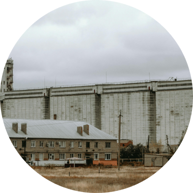
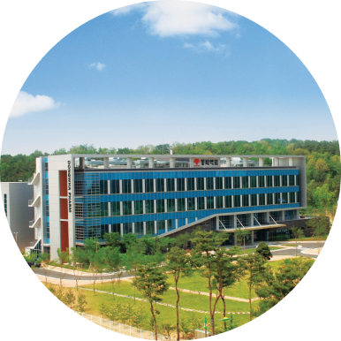

> 연구개발 > 연구성과
research achievements
연 구 성 과
1973 - 1994

- 1973
- 중앙연구소 발족
- 1985
- 중앙연구소 연구동 준공 , 동결건조 주사제
세프메타존주 제품화
- 1994
- IR52 장영실상 수상(암브록솔 개발 성공), 소염진통제 록소닌정 제품화
2001 - 2008
- 2001
-
세계최초 방사성 간암 치료제 "밀리칸주"
신약개발 성공
다산 기술상 수상
세계 일류상품 인정서 획득
- 2002
-
"밀리칸주" 대한민국 10대 신기술 선정
한국 신약개발 대상 수상
산학연 협동연구 국무 총리상 수상
- 2003
-
비타천 플러스 제품화
동암약의상 수상(신약개발부문)
신기술실용화 동탑산업훈장 수상
- 2004
- 판토프라졸(위,십이지장궤양 치료제) 합성 성공
- 2007
-
골다공증치료제(DW1350) 기술이전 (미국 P&GP)
퀴놀론계항균제(DW224a) 기술이전 (미국 Pacific Beach Biosciences)
- 2008
- 골다공증 치료제(DW1350) 기술이전 (일본 Teijin)

2010 - 현재

- 2010
- 용인 연구소 준공
- 2014
- 클자핀 국내 발매 (단독 국산화)
- 2015
- 자보란테 보건복지부 보건신기술(NET) 인증
신퀴놀론계 항균제 '자보란테', 식약처 허가
- 2016
- '자보란테' 중동 및 북아프리카 12개국 라이선스 및 공급계약 체결
- 2017
- '자보란테' 중국 라이선스 및 공급(판매) 계약 체결
- 2018
- '자보란테' 대한민국신약개발 대상 수상
- 2022
- 국내 최초 인지기능 개선 프로바이오틱스(DW2009) 개별인정형 기능성 원료 승인 획득